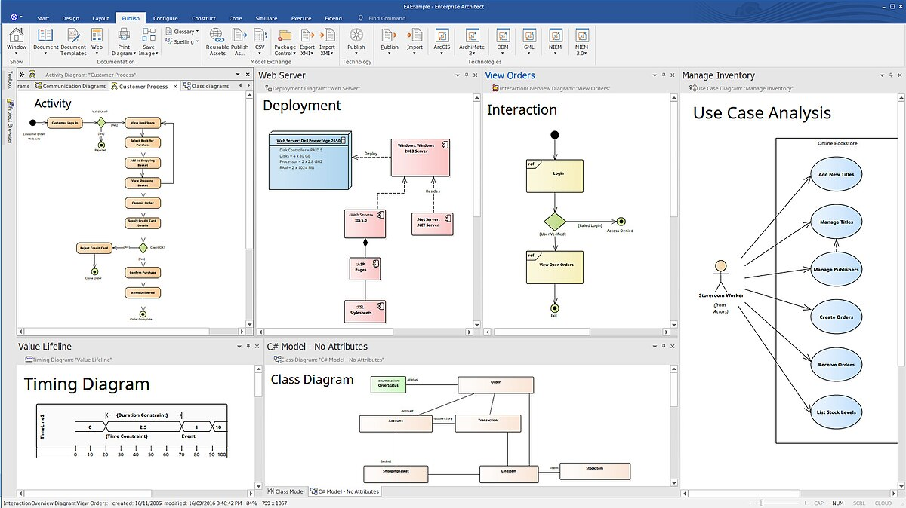

ja disainimiseks.

on kliendi-serveri rakendus.

"Ülemise taseme" CASE-vahendeid toetavad peamiselt analüüsimist ja projekteerimist.
Ennekõige leiavad nad kasutust visualiseerimisel, erinevate skeemide koostamisel ja
samuti ka dokumentatsiooni genereerimiseks. Toetavad traditsiooniliste diagrammikeelte
kasutamist (andmemudelid, UML-skeemid jne).
Viited allikale: e-õppearhiiv
| Programmi nimi | Programmi logo | Kirjeldus | Programmi vaade |
|---|---|---|---|
| Enterprise Arhitect |
|
Enterprise Arhitecti kasutatakse visuaalseks modelleerimiseks ja disainimiseks. |
 |
| IBM DOORS |
|
IBM DOORSi kasutatakse nõuete haldamiseks. See on kliendi-serveri rakendus. |
|